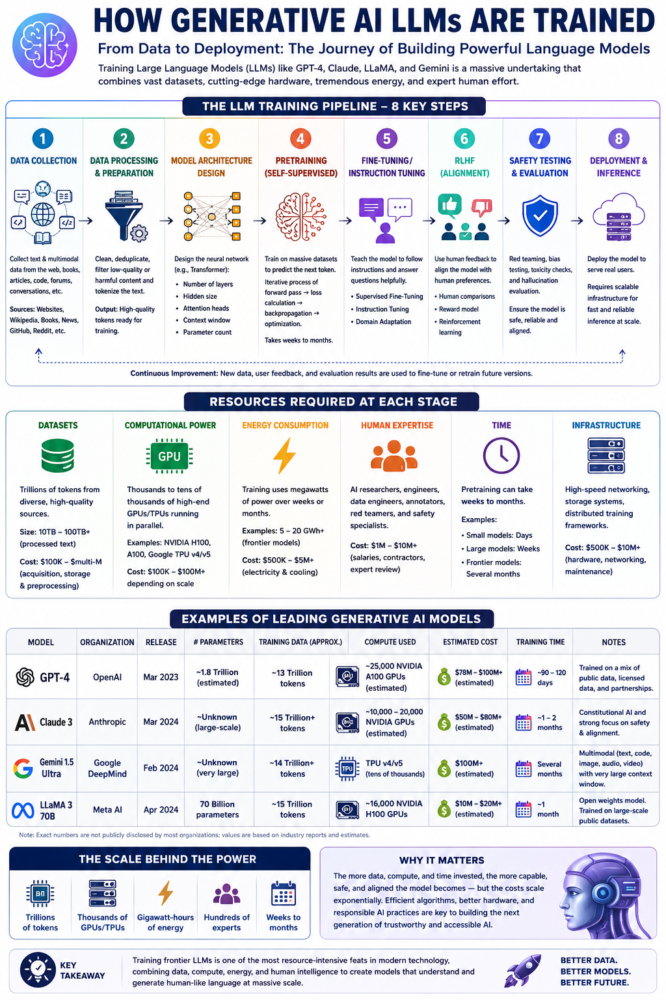

From Data to Deployment: The Journey of Building Powerful Language Models
Large Language Models (LLMs) have revolutionized artificial intelligence, powering applications from chatbots to code generation. But what does it actually take to train these models? This article breaks down the complete 8-step pipeline, the massive resources required, and real-world examples from industry-leading models.
Understanding LLM training is crucial for AI engineers, as it reveals the scale, complexity, and trade-offs behind modern generative AI systems.
| Model | Organization | Release | Parameters | Training Data | Compute Used | Est. Cost | Training Time |
|---|---|---|---|---|---|---|---|
| GPT-4 | OpenAI | Mar 2023 | ~1.8 Trillion | ~13 Trillion tokens | ~25,000 NVIDIA A100 GPUs | $78M – $100M+ | ~90–120 days |
| Claude 3 | Anthropic | Mar 2024 | ~Unknown (large-scale) | ~15 Trillion tokens | ~10,000–20,000 GPUs | $50M – $80M+ | ~1–2 months |
| Gemini 1.5 Ultra | Google DeepMind | Feb 2024 | ~Unknown (very large) | ~14 Trillion tokens | TPU v4/v5 (tens of thousands) | $100M+ | Several months |
| LLaMA 3 70B | Meta AI | Apr 2024 | 70 Billion | ~15 Trillion tokens | ~16,000 NVIDIA H100 GPUs | $10M – $20M+ | ~1 month |
The more data, compute, and time invested, the more capable, safe, and aligned the model becomes — but the costs scale exponentially. Efficient algorithms, better hardware, and responsible AI practices are key to building the next generation of trustworthy and accessible AI.

Complete visual overview of the LLM training pipeline, resources, and leading models